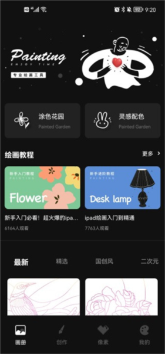
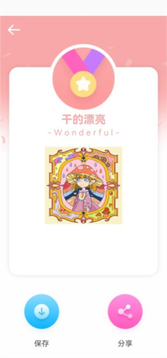
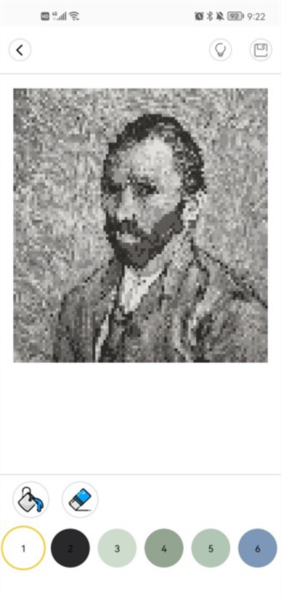

iArtbook 上手三天，我终于分清了涂色和画画的边界
以为是个像素填色玩具，结果掏出画笔认真画了一下午。从安装到第一次导出，这篇说说我踩过的坑和觉得好用的地方。
前阵子刷短视频刷到别人在手机上像素填色，手指点来点去没什么技术含量，成品倒是挺好看。评论区有人说用的就是 iArtbook，我随手就搜了一下——结果搜出来至少三款叫这名的应用，图标全是笔刷风格，看截图根本分不出来哪个是哪个。
说实话这就让人有点烦了。一款面向普通用户的应用，同名撞成这样，搜索结果里鱼龙混杂，装错的概率比装对的还高。安装包从官方下载拿，我最后是靠核对包名才把目标应用认出来的：在应用详情里找那个叫 com.tktn.ycfn 的，对得上就是中文安卓这一款——从iArtbook官网上能确认它由深圳一家公司出的，版本号停在 2.x 区间。装完打开底部四个标签写着「画册 / 创作 / 像素 / 我的」，首页铺着涂色花园和灵感配色——这就对上了。

第一眼：比想象中重，但重得有道理
打开应用第一反应是：这玩意儿比我预期的要重。不是说占空间大——下载包也就几十兆——而是它承载的玩法真不少。画册里铺着现成的涂色线稿，数字填色按数字对号入座，解压填色纯自由发挥，创作板块能导入自己的照片当底稿临摹，像素填色又单独占了一块。后来翻了一下它的版本迭代记录，2.2.7 之后还改过一轮界面，把底部标签重新分组，把填色内容集中到了一个叫「探索」的新板块里，教程也从藏得深的角落提到了独立标签。
说实话这反而让我对团队的印象好了一点——不是那种一次性做完就不管了的应用，而是真的在根据用户反馈调产品结构。旧版的「创作」板块在新版里被「画室」页的「来自图像」按钮承接了，功能没丢，只是入口换了地方。如果你跟我一样网上找教程时发现截图对不上，别慌，多半是版本不同——2.2.7 和 2.3.x 两套界面并存，看教程先对一下底部标签的排列就知道是哪一版的东西。
实际用下来，三个我最有体感的功能
第一个是数字填色。这是我一开始装它的初衷：一张线稿上每个格子标着数字，选对颜色往里填就行，不需要任何绘画基础。但真填起来才发现，它跟短视频里展示的不太一样——不是机械地填格子那么简单，配色本身是有意思的。线稿里的色块划分很讲究，有些地方故意留了大色块让你自由发挥，填完整体效果比我预期的好看不少。填完一张大概要半小时，刚好是通勤路上或者午休时能做完的量，压力不大，成品还有成就感。

第二个是导入图片创作。填色玩腻了我想试试自己画点什么，于是从相册选了一张朋友拍的风景照片，当底稿导进了工作台。操作很直观：底部悬浮一个加号，点添加就能选图，进来之后先把底稿图层的不透明度拉低，然后新建一层在上面描线。我之前在别的绘画应用里干过类似的事，但图层操作总让我手忙脚乱——这个的图层面板布局很清爽，新建、隐藏、删除都在同一屏能触达的位置，不会像有些应用那样把关键操作藏在二级菜单里。
这里有个我差点踩的坑：导入底稿之后如果直接在底稿层上画，画完想改就麻烦了。一定要先新建图层再动笔——我第一次就是忘了这回事，描了一半才反应过来，只好撤回重来。后来再导入照片，先建图层已经成了条件反射。
第三个是像素填色。跟数字填色的"按号入座"不同，像素填色给你的是一张像素风线稿，颜色自由选，一格一格填。听起来好像更自由，但实际上对配色能力要求更高。我填了一张卡通头像，选颜色的时候纠结了好一会儿——肤色选偏暖还是偏冷？头发是纯色还是加两缕挑染？最后成品出来我自己觉得还挺可爱，但发给朋友看，她直接说"这不就是色块吗"。行吧，审美这东西强求不来。

有几个地方我得说句实话
首先，权限流程有点拧巴。我第一次保存作品的时候，应用弹了一个存储权限请求，我当时想都没想就点了拒绝——毕竟现在大家对权限都挺敏感的。结果之后每次导出图片都失败，点保存按钮没反应，也没有任何错误提示。我以为是应用坏了，卸了重装一次还是一样。后来去iArtbook文档翻了一下才知道，这种情况要去系统设置里手动给应用开存储权限，应用内的隐私设置里部分版本也有相关入口。说实话，第一次拒绝权限就应该弹出一个明确的解释，或者至少在导出失败时给出提示——现在这个行为太像"应用出 bug 了"，容易把新用户吓跑。
其次，教程质量参差不齐。它的新版界面把教程提到了底部独立标签，热门课程直接铺开展示，这个设计本身很好。但点进去看内容，有些课程明显是团队自己录的，步骤讲得清楚，节奏也合适；但也有些课程可能是用户上传的，画面糊、声音小、还中途卡了几分钟。没办法，这种社区化的内容生态就是这样，好的坏的混在一起，能不能碰上好用的全看运气。
还有，缓存清理逻辑需要注意。它的"我的"板块里有个清除缓存的按钮，清掉的是临时资源数据——正常绘画文件不会被清掉。但这里有个容易忽略的点：卸载应用会连作品一起删。如果你换手机或者需要重装，先把要留的作品导出到相册再动手。我之前用别的应用踩过类似的坑，那次丢掉了好几张画了一半的作品，所以这次特意记了一下这件事。
适合谁，不适合谁
适合三类人：第一类是想找个解压方式的上班族，数字填色和像素填色都是半小时内能完成的小任务，做完有即时成就感，不占时间也不动脑子；第二类是想学画画但不知道从哪入手的新手，导入自己的照片当底稿临摹，比对着空白画布更容易开始；第三类是喜欢收集涂色成品的人，它的线稿库选得还不错，国创风、二次元、简约线条都有，更新速度也能跟上。
不太适合的也有：如果你想要一个专业级的绘画工具，无限图层、Apple Pencil 压感、逐帧动画那种，这款可能不是你的菜——它更偏向休闲和入门，功能够用来玩但不够用来当生产力工具；还有就是对界面美观度特别敏感的人，它的设计偏实用主义，不算难看但也没什么特别惊艳的地方，用久了不会觉得腻，但也不会让你眼前一亮。
说句题外话
我装 iArtbook 的契机是短视频里别人展示填色成品，但真正让我留下来的是那次导入照片临摹的体验。填色是它最显眼的玩法，但自由绘画才是它藏在后面的王牌——工具够轻，上手够快，又不会像那些专业应用那样把人吓退。
从搜出来三款同名应用差点装错，到核对包名认准目标；从第一次填色紧张地对数字，到后来敢导入自己的照片开画；从保存失败以为应用坏了，到弄明白权限该怎么开——三天时间不算长，但算是把它的核心玩法摸了一遍。现在我每天睡前花二十分钟填一张数字填色，有时候画兴上来就导入张照片描两笔，挺好。
这款应用的中文资料维护得挺勤，我顺手在GitHub、Gitee和GitCode都搜到了对应的备份仓库，国内访问也方便，按需取用就行。